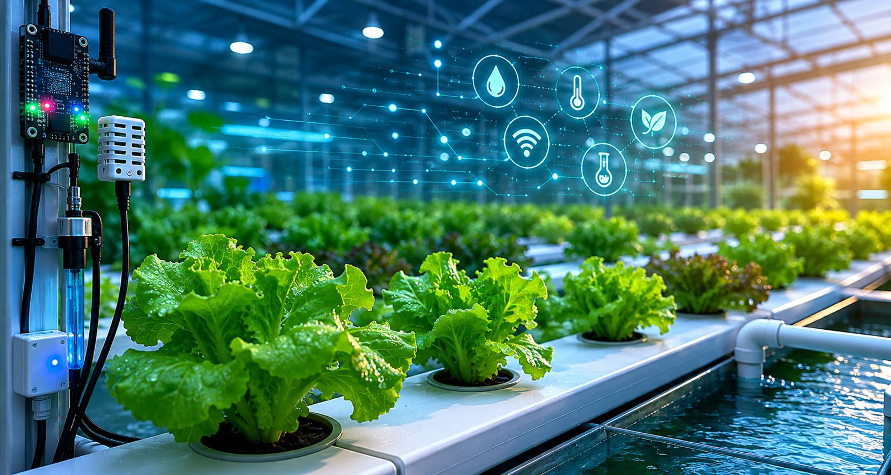
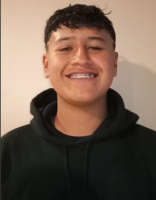

Desarrollo tecnológico
Programación de la ESP32, integración de sensores y automatización del sistema.
Escalones de Vida es un sistema hidropónico NFT de cuatro niveles. Dos nodos ESP32 miden la solución nutritiva, mueven la bomba y envían los datos a un panel web.
Lo que ya está construido y funcionando en la escalera.
El sistema repite este ciclo cada pocos segundos.
Los sensores leen temperatura, pH, sólidos disueltos, nivel del tanque, caudal y peso.
Los nodos ESP32 filtran las lecturas y las organizan en mensajes JSON. El nodo receptor las concentra y las envía al servidor.
Enciende y apaga la bomba de 12 V con una etapa de potencia. Calentador y dosificador de nutrientes se suman en la siguiente fase.
Un servidor Node.js recibe los datos, los guarda en MySQL y los muestra en gráficas dentro del panel web.

En una ciudad hay poco suelo y mucha pared. Apilar los canales NFT en cuatro niveles multiplica la superficie de cultivo sin ocupar más piso, y la solución nutritiva se recircula en lugar de perderse. La literatura reporta ahorros de agua de hasta 90 % frente al cultivo en suelo (FAO, 2018).
Medir no basta: lo que queremos es que la escalera se mantenga estable sola. Hoy el sistema mide y registra; el siguiente paso es que también actúe.
Estado real del prototipo, sin adelantarnos.
Programación de la ESP32, integración de sensores y automatización del sistema.

Diseño experimental, documentación técnica y validación de resultados.
María Paula Galvis Orjuela y Andrés Santiago Rachen Papamija · Docente: Jhonatan Paolo Tovar Soto
Tecnología en Automatización Industrial, Universidad de San Buenaventura, Bogotá
Qué mide cada sensor, en qué pin está conectado y cómo se calibra.
Ver sensores